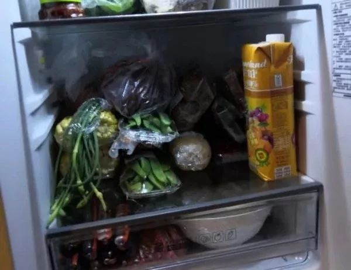

不止有武汉：湖北疫区17城实录（下篇）
原文链接 备份链接 这是一场无法预知开始、但也许可以看到结局的抗击疫情特殊战役，它不仅仅是疫情爆发地汉口的战役，更是武汉及周边，湖北、乃至全国的战役 文 |《财经》记者 房宫一柳 黎诗韵 管艺雯 宋玮 高洪浩 余洋洋 陈晶 实习生 张凡 …
“
那个好心工友的家人，得知母亲跟她住在一起后，疯狂地打电话，督促她让母亲搬走。现在全城封锁，租房也租不到。

—全民故事计划的第434个故事 —
一
1月21号，妹妹打电话给我，让我从上海买些口罩和莲花清瘟，她说黄州的药店都卖断货了，赶紧买一些囤着。我并未在意，心想等晚上下班，趁着去火车站的空档再买。
下班后，我连跑了4家药店，一次性医用外科口罩和莲花清瘟均已断货。离火车开动的时间越来越近，我不得不放弃第5家药店。幸好丈夫是在一家生物科技公司上班，实验室有不少库存的N95口罩，但按人头算也紧缺，托他的福，我拿到了2个N95口罩。
上了回九江的火车（从上海坐车到九江，再中转回蕲春老家），我戴上口罩，剩下一个准备留着回上海的路上戴。
刚上火车，妹妹又打来电话，我猜她是要问买口罩和药的事，没等她开口就告诉她，上海的口罩和药也断货了。你姐夫从公司给你们带了一些一次性的医用外科口罩，后天去黄州辞年的时候会带给你们。
妹妹说，“知道了，”我察觉到她的语气不对，问她怎么了，她有些委屈地开口，“你帮我劝劝妈妈，让她把医院的工作辞了。”
母亲这两年，一直在医院做着保洁工的工作，特殊时期，家里人希望她能够回家过年，可母亲就是不肯辞职。
妹妹嘱咐道，“你和妈好好说说，现在就靠你劝她了。”妹妹的声音无比焦急。她和父亲已经轮番上阵，却拗不过母亲。父亲为此大为光火，大骂母亲糊涂，做保洁一天能挣几个钱，“万一感染了，命都没了。”
母亲争辩说她只负责肾病病房的保洁，她的工作区域没有肺炎病人。而且，之前保洁公司的老板和她确认多次，她都答应愿意春节加班。“做人总要讲诚信，反悔算什么。”
“现在临近过年，本来就有很多人辞工，人手不够，这时候再提出辞工，领导去哪里找人呢？”母亲还向妹妹保证，她在医院会注意保护自己，戴两层医用口罩。N95口罩紧张，只有医生和护士才能用，像母亲这些保洁人员，只提供一次性的医用外科口罩。
本来，他们早就商量好今年在妹妹的新房过年。母亲想着过年不回蕲春老家，工资比平时高，十月份就报名了春节加班。
母亲没念过书，6岁时因为一场感冒夺去了右耳的听力，外公外婆用尽各种土方子，总算保住了左耳。她一辈子待在老家，养育我们3个孩子，照顾奶奶，好让父亲安心在外打工。一家人的生活，全仗着母亲。
小时候，我特别讨厌放假，因为母亲总有忙不完的活，我们三个孩子也不能空闲，帮母亲锄草、割谷、栽秧、打猪草。我总是问母亲，为什么别人可以玩，我们家的事总是做不完？母亲却教育我们要好好读书，不要像她一样种田，永远没空。
如今，我考上大学后到了上海工作，也结识了在上海工作的丈夫。到了假期，再也不用像从前那么忙了，无比期盼放假，可没想到，母亲依然还是不愿意放下工作。
二
挂掉了妹妹的电话，我赶紧打给母亲，一开始是说我们什么时候到家，等我给她讲这次疫情的严重性，告诉她万一感染了，目前也没有特效药，“你还是辞职吧，这样比较保险。”
母亲拒绝得很干脆，说她不能辞工，现在是特殊时期，医院正好缺人，她也答应了别人，不能说话不算话，到了最后，她反倒安慰我们放心，她又不是三岁小孩，让我们不用担心她。然后挂掉了电话。
我又给妹妹打电话，父亲在旁边吼了起来，“她就是一头蠢牛！”得知母亲一意孤行，还要去医院上班，父亲有些气急败坏，最后赌气似的说：“算了，我们都回蕲春老家过年，让她一个人在黄州好了！”
到了22号清晨5点，黄州飘着濛濛细雨，阴冷阴冷的。母亲急匆匆地起床，准备赶第一班公交去上班。他们前些天才搬进妹妹的新房，父亲担心母亲迷路，也骂骂咧咧地起床，亲自送母亲去公交站。
母亲不识字，父亲给她制定了一份路线：出了小区门口，看到一个菜店，沿着去菜店的方向一直走，看到第一个公交站牌就是了。
“那里只有一趟公交，只要有车停，你上去就是。”父亲对母亲说。菜店、公交站、公交，母亲是认识的。
22号上午，父亲带着弟弟妹妹回老家，给外公辞年。妹妹担心我们的安全，不让我们去黄州，他们会在蕲春老家等我们。
下午4点，我和丈夫下了火车，终于坐上了村村通。车上只有我和丈夫戴着口罩，其他人看我俩的眼神也很奇怪。丈夫问售票员大姐，“怎么不戴口罩？”一个中年人无所谓地说，“怕么事，要死还躲得脱么？”
我感到头皮发麻，丈夫又向他们介绍这次肺炎的严重性，比“非典”还厉害，没有药可治，全靠自己的免疫力抵抗病毒，已经死了好多人。大家七嘴八舌，讨论自己从手机上看来的消息，又笑成一团。
一个老乡自信地说：“农村这种山旮旯最安全，都是在老家的人，没到武汉去。”我默默打开车窗通风，旁边一个老大爷嫌太冷，又把窗户关得严严实实的，一丝风都透不进来。
那天晚上，我一直没睡好，一方面担心母亲，一方面又感叹农村人的防范意识不强。到了第二天早上，我和丈夫顾不上吃早饭，赶去探望外公。外公想留我们吃饭，我们哪有时间，又马不停蹄地赶往娘家。
等我们赶回家，爸爸和弟弟穿戴整洁，正准备出门。弟弟还打了发蜡，我打趣弟弟打扮成这样，戴上胸花就可以去接新娘了。
爸爸笑着说：“我工友介绍了一个女孩，一会儿去看看。”以前，爸爸是十分抗拒相亲的，“现在这个年代又不像以前，读那么多年书，还找不到一个自己喜欢的女孩子？”现在父亲也为弟弟的婚事焦头烂额，到处托人说媒。
“多大年纪？干什么的？”我问。弟弟双手一摊，说他完全不知情，早上爸爸突然通知他要去相亲。爸爸说他也不清楚，只说两个人总有个差不多，不然他工友也不会介绍。“先去看看再说，说不定成了呢！”爸爸自言自语，似乎怕弟弟趁机反悔说不去。
我和妹妹开始烧午饭，妹妹告诉我，母亲知道这次肺炎疫情的严重性，有很认真做防护。她已经教会母亲如何正确使用口罩，还叮嘱母亲戴了两层医用口罩。
这个时候，我才知道母亲所在的医院，现在正是新型肺炎的重灾区。
“医院人手特别紧张，疫情期间，没人愿意做，要是母亲也辞工，医院都没人打扫，那真成了病毒窝。”妹妹像是被母亲说服了。她问我该怎么办，我也不知道如何是好。
我们相顾无言，这时妹妹的手机突然响了，是黄州的同事打来的，她告诉妹妹，1月23号晚上12点，黄冈封城。
“糟了，那下午肯定堵车，快点通知老爸和伟（我弟）回家，赶紧去黄州。”妹妹打电话给父亲，弟弟麻利地调转车头，打道回府，嚷嚷着快点回去，不然回不了黄州。爸爸气得骂他，“你怕是要打一生光棍，叫你和女孩子见个面都不敢，尽扯些野芡（不相干的事）。”
下午5点，弟弟开车带着他们回到黄州，向我报平安。妹妹紧急去了一趟超市，她吐槽超市的物价飞涨，平时不到一块钱一斤的胡萝卜现在卖六块。妹妹坚信封城后还会再涨，抢了满满当当一个购物车，省着吃能撑半个月。“你们俩也要做长远打算。”妹妹说。

妹妹发来家里囤的菜 | 作者供图
此时，我和丈夫一筹莫展，我俩无法确定什么时候能回上海，去和留都是一个问题。后来，我在网上看到那些封城前离开湖北的人，也替自己捏了一把汗，当然这是后话。
三
情况比我们想象得还要糟，看着手机网页上公布的感染数字越来越高，我又担心起母亲。
到了晚上7点，我估摸着母亲该下班了，打电话过去询问情况。妹妹却说，母亲去市中心租的房子那边住，不回家了。
“封城后，公交停运了，这边离医院蛮远，住那边方便些，”妹妹说，“明天过年，妈可能还在那边住。”妹妹的声音弱了下去。
“过年她也一个人在那边吗？”我有些生气，埋怨妹妹不懂事，如果母亲在那边，不如大家都去租的房子过年。
“是的。那边也能做饭吃，晚上记得给她打电话。我们小区已经有人感染这个肺炎了，大家人心惶惶，不敢出门，憋在家里跟坐牢一样。小区现在天天消毒，居委会每天巡逻，要求大家戴口罩，尽量少出门。”我听得也有些无奈，只能嘱咐他们注意身体，不要出门。
到了大年三十那天，我却忘了和母亲打电话。白天，母亲不方便接电话，她下班后，我正在和婆婆一起做年夜饭，吃完饭打电话，母亲已经关机了。妹妹告诉我，母亲上班很累，起得又早（公交停运，母亲步行上班，每天4点半就得起床），她每天8点就关机睡觉了。

我在的农村村口也被封路 | 作者供图
之后的几天，我掐着时间给母亲打电话，她看起来很累，但还是安慰我让我别担心。我好几次跟母亲说辞职的事，她都回绝了。
到了初四上午，妹妹突然发微信，说她也回租的房子那边。我提醒她注意防护，正好和母亲有个伴，不然母亲一个人太孤单。
晚上，我掐着母亲下班的空档，拨通了妹妹的电话，问母亲回家没。
“她搬到医院外面和别人合租去了。”这个消息令我猝不及防。
原来，今天房东打电话告诉妹妹，有人举报母亲在医院工作，有传播病毒的风险，现在医生护士都不回家，在宾馆集中住宿，让妹妹也想想办法，不能传播病毒。
房东建议妹妹跟医院反应情况，安排保洁人员集中住宿。不是他不让住，是有人举报了。希望妹妹能理解他，不要让他为难。
黄冈市确实有给医护人员安排宾馆住宿，但是对于母亲这种默默无闻的保洁，不要说安排宾馆住宿，就连最基本的防护服都不会发。母亲曾无意告诉我，医院每天免费为他们测量体温，发现异常，立刻解雇；没有异常，继续干活，辞职要扣一个月工资。
我没料到会出现这种情况，再次打电话给母亲，“妈，辞工别干了。这时候干保洁一点保障没有，只发一个口罩有什么用？”
“不干了要提前一个月申请，临时辞工得扣一个月工资。”母亲唯唯诺诺地说。到了这个时候，母亲却还是舍不得那2000块钱。
四
当初，母亲跟妹妹去黄州，是因为再也干不动农活，就和妹妹去黄州找工作。
小区里的一位阿姨告诉她，医院里的保洁没人做，母亲就想去面试。
妹妹不同意，医院的保洁常年跟病人打交道，感染疾病不划算。保洁的工作很好找，商场、学校都要保洁，不用一定要去医院。
“医院保洁还不是要人做么？都不愿意做，那谁做？”母亲振振有词。
上班后，母亲很珍惜这份工作，感叹比种田舒服多了，起码不用风吹日晒。
这一干就是两年，母亲从未请过一次假。医院有规定，8点前必须完成所有清扫工作，母亲总是7点半就完成任务。
好心的工友们给她指点迷津，可以去储物间休息一会儿，只要不被老板抓住就好。母亲就是不开窍。我们劝母亲不用太紧张，工作的事过得去就行。身体最重要。
母亲却教育我们，“莫要人说重话！”她认为领了工资就必须认真干活，不能耍滑头。
现在，母亲连家都回不了，我感到气愤，“这种时候干活起码要保障生命安全吧，连自己的生命安全都不能保障还干什么？再说他们这种行为违反劳动法，我还要举报他们呢！”
母亲却还是让我不要担心，她安慰我，和她合租的那个阿姨心地很善良，不过她俩住在一起会增加感染风险，还是需要单独租房。
“公司不管不问么？”我总习惯叫公司，其实上是个体户。没有劳动合同，工资、纪律都是口头约定。老家这种性质的个体户多得是。
母亲说她也向老板反映了困难，老板派来一辆车，拉上母亲的被褥，到一个好心的工友家暂住一夜。
母亲口中的工友也是被小区禁止回家，暂时在医院附近租一间老破小的房子，只有一张床。这些房子原是租给来医院陪护的家属。
县城的路都被封了，此时我想去母亲身边，也过不去。我只能打电话催妹妹想想办法。
妹妹在电话那头也急哭了，她告诉我另一个坏消息，那个好心工友的家人得知母亲跟她住在一起后，疯狂地打电话，督促她让母亲搬走。现在全城封锁，租房也租不到。
到了这个时候，妹妹给母亲的老板打电话反映情况，要求解决住宿问题，实在不行只能辞职，不然母亲感染了谁负责。
老板也说暂时没法解决问题，只是说尽好话。她答应帮忙找房，乞求母亲不要辞职，因为现在确实不好招人。但是防护物资、租房费用等问题，她也真的无能为力，就连她自己也是只戴一次性口罩上班。
母亲不得不从工友的住处搬出来，想到母亲有可能流落街头，我只能一遍遍地给人打电话，也通过一些网上的渠道寻求帮助，可大多数人也表示没有办法。
眼看着夜越来越深，妹妹也在四处想办法，去找房东求情，也找社区的人求情，可大家也都一一拒绝。在我快要绝望时，母亲打来电话说：“有地方住了，别担心了。”
是一个医院的护士，听闻了这件事，说她们医护人员在医院的特定休息区还有一个空出的床位，冒着风险，让母亲过去跟她们住。我千恩万谢，母亲还是说：“别担心了。”
今天是年初八，母亲依然坚守在岗位上。
我只能等母亲下班后，给她打个电话，听母亲报平安。不过这一切也很苍白无力，毕竟我也没办法给母亲一身抵抗病毒的防护服。
征 集
我们想通过全民故事计划这个平台，让大家了解湖北每个地区：武汉、黄冈、鄂州、黄石、孝感、襄阳、荆州、荆门、随州、咸宁、十堰、宜昌、恩施州、天门、仙桃、潜江、神农架林区，每个县、每个村镇的真实日常。
在湖北的你，可以将你的经历告诉我们。
无论是一段话还是一张图片，都可以在全民故事计划的公众号后台，直接发送给我们。
希望这次，我们能够一起渡过这一难关。
作者落雨，机械工程师
编辑 | 蒲末释
▼
全民故事计划正在寻找每一个有故事的人
讲出你在乎的故事，投递给
tougao@quanmingushi.com
故事一经发布，即奉上千字300元-1000元的稿酬

请您支持一下全民故事计划，点击在看
原文链接 备份链接 这是一场无法预知开始、但也许可以看到结局的抗击疫情特殊战役，它不仅仅是疫情爆发地汉口的战役，更是武汉及周边，湖北、乃至全国的战役 文 |《财经》记者 房宫一柳 黎诗韵 管艺雯 宋玮 高洪浩 余洋洋 陈晶 实习生 张凡 …
原文链接 备份链接 国内外的口罩都在送往武汉，可武汉医院的不仅缺口罩，甚至即将用完。人民日报在其官微发问：究竟是物资紧缺还是物资分配环节存在问题？ 截止到目前，协和医院收到的物资全部来自企业和个人捐赠。物资直接对接到各地疫情指挥部或是各 …
原文链接 备份链接 摄影记者 | 蔡小川 “女士们先生们，列车已经到达武汉站，请您按照先后顺序下车……” 广播响起来的时候，车厢里的气氛陡然升到了最高点。所有人的目光都转向了车窗外夜幕之下黑压压的城市。一个列车员从车厢一头飞奔过来。“前面 …
原文链接 备份链接 封城已过去一周，在这个谈武汉人、湖北人色变的时候，我们想要好好看一看他们。今天我们挑选的几篇读者来稿，围绕着湖北的武汉和黄冈，讲述他们在旋涡和风暴中心的日子。他们有些住在城市，有些住在乡村和小镇。环境的不同给了他们不 …
原文链接 备份链接 *************▲************* （武汉红十字会官网截图/图） 全文共*3412*字，阅读大约需要7分钟。 “在物资发放这块，不会说我们想给谁就给谁，所有的分配由卫健委和防控指挥部来决定。” …